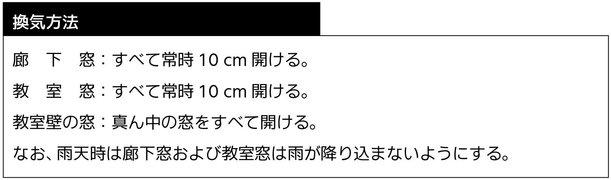
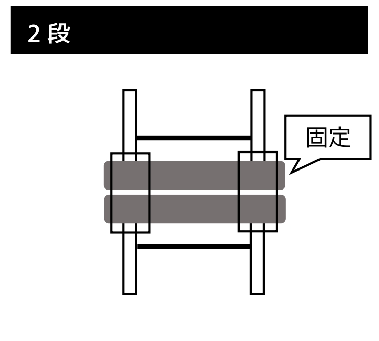

1. 指 針
1.テーマに基づいた展示を行う。
2.常に責任者と協議し、その指導にしたがって良識ある活動を行う。
3.参加を希望する団体は、各種申込用紙を提出する。内容に不備のある場合は、責任者を通じ差し戻す。
2. 制作内容の注意点
はぐま祭の内容に関しては、生徒会本部、生徒課、課長主任会、職員会議で審議し、最終決定は校長が行う。
1.大きな音を出すなど、周囲を妨害しかねない行為は禁止する。
2.展示において、既製品のゲーム機を使用してはならない。
3.参加申し込みにおいて許可された場所以外で活動してはならない。机・いすの移動までは、部展は各部室、クラス展は各クラスで活動する。
4.所属団体外の者に、参加を強要してはならない。
5.展示会場については別紙を参照のこと。
3. クラス展の展示場範囲
1.28 HR を除く 2 年のクラス展は、教室の半分を使用する。教室は、廊下側と窓側で分割する。入口には 2 クラス共通のゲートを作成してもよい。
2.28 HR および 3 年のクラス展は、1 教室すべてを使用する。
4. 展示場制作の注意点
1.熱中症対策のため、各展示場では常時喚起する。換気方法は次のとおりである。

2.廊下は展示場として使用したり、ゲートや装飾などを除く一切のものを置いたりしてはならない。ゲートや装飾などを設置する場合は、廊下を 190 cm 以上開ける。
3.蛍光灯を取り外したり、付近に物を設置したりしてはならない。
4.エアコンは、展示物で覆ってはならない。
5.天井、壁、廊下、窓やサッシなどへの釘、ガムテープ、ビニールテープ、画びょうなどの使用は禁止する。また、以下の行為をしてはならない。
1.塗料、ワックスがはがれたり、跡が残ったりする部分へのテープ類の使用。
2.黒板へのテープ類の使用。
6.スプレー、ペンキ類の使用は、下記の通りにする。なお、使用はすべて屋外で行い、使用にあたっては、活動場所をすべて責任者に伝える。
1.使用時はブルーシートで床を覆い、その上に新聞紙、段ボールなどを敷く。
2.スプレーは風で拡散することのないよう注意する。
3.絵の具の付着のあるものは、校舎の水道で洗ってはならない。はぐま会館となりの水道または武道場 1 階の水道を使用する。
7.火気は、その一切を禁止する。
8.工具およびカッターなどの取り扱いにあたっては、けがのないよう注意する。校舎を破損することのないよう、板を下に敷く。（参考：壁のボード 1 枚の張替えには、約 10 万円を要する）
9.校舎を破損した団体は、責任者および事務室に申し出たうえで、各自の責任のもと復旧する。かかる費用の一切は、各自でこれを負担する。
10.準備に際し使用するものの一切は、各団体で用意する。学校の備品は、特別に許可を得た場合を除き、使用してはならない。なお、生徒会本部および事務室は、用具の貸し出しを行わない。
11.個人の所有物には、それぞれ氏名を記入する。
12.特別教室などの備品を使用する場合は、管理者に問い合わせ、その指示に従う。
13.大量の電力を消費する器具を使用してはならない。
14.定時制と教室を共用する教室では、定時制の掲示物を外してはならない。
15.職員室および準備室付近などで作業してはならない。図の黒塗りの部分で作業してはならない。

16.準備室前での作業は、担当教員の許可を得たうえで、業務を妨害しないようにする。
17.他団体の教室前では、教室の使用の有無を問わず作業しない。ただし、責任者同士の協議により合意を得た場合はこの限りではない。
18.はぐま祭前日の午後、生徒課教員による展示会場の見回りを実施する。違反ないし危険な部分があった場合、責任者に通達する。当該箇所は開会式までに修正する。
19.展示会場のごみ箱は原則撤去し、使用団体ごとに保管する。団体の判断によりごみ箱を設置する場合は、各団体がごみ処理の責任を負う。
20.窓を暗幕ないし段ボールで覆う場合は、以下の点に注意する。
1.窓の開閉の妨げにならないように覆う。
2.破損および転落の危険があるため、窓を開けたまま覆わない。
3.覆った場所に来客が寄りかかることのないよう、掲示ないし説明にて注意を徹底する。
21.窓の付近に、高さのあるアトラクションを設置してはならない。机は、窓の付近で使用してはならない。
22.教室の扉および窓を取り外すことはできない。
23.エアコンは、熱中症対策等の観点から、適切に使用する。
5. 机・いす・教卓
2.使用数は、第二次申し込み用紙に記入する。申し込み後は原則変更を受け付けない。
3.移動先および移動時間は、担当教員が「机・いす・教卓の移動表」を作成し決定する。
注 意：第二次申し込み用紙の提出内容を参照する。表の作成にあたり時間を要するため、第二次申し込み用紙の提出後は希望数の変更を一切認めない。
6. パネル・暗幕
パネルの担当は体育委員会、暗幕の担当は交通安全委員会
1.パネル・暗幕の数量には限りがあるため、以下の通り制限を設ける。
1.パネル：各団体 3 枚以内（2 年クラス展は、部展・3 年クラス展への配布後余りがある場合に限る）
2.暗 幕：各団体合計 45 平方メートル以内
注 意：教室を分割する場合の仕切りはこれに含めない。また、部展については、パネルに余りがある場合、追加の配布を行う場合もある。
2.使用数は、第二次申し込み用紙に記入する。提出後の変更は受け付けない。
3.パネル・暗幕の在庫数はそれぞれ次の通りである。
1.パネル：138 枚
注 意：生徒会本部の備品のサイズは、(縦) × (横) = 90 cm × 180 cm。
2.暗 幕：次の表の通り。ただし、性質上ある程度の誤差を含む。

4.配布の割り振りは、実行委員会が調べる在庫数に基づいて生徒会本部が行う。配布時に不足ないし破損等があった場合は、各団体と実行委員会が協議し対応する。
7. 会 計
1.展示経費の上限を以下の通りに定める。
1.部展・委員会：上限なし
2.1 年校内装飾：30,000 円
3.2 年クラス展：60,000 円
4.3 年クラス展：90,000 円
2.各会計担当者は、生徒会本部が配布する会計報告書を提出する。物品の購入にあたっては、領収書の交付を受ける。レシートは認められない。
3.（その他）
1.経費は、すべて各団体が徴収し用意する。
2.金銭の取り扱いについては各団体が責任を負う。
3.経費の徴収にあたっては、妥当性、所属生徒の同意、責任者の承認が必要である。各団体の責任で対応する。
4.出費は最低限におさえ、集金の過不足は避ける。
8. 申し込み・パンフレット
1.第一次申し込み
1.第一次申し込みの内容に基づき、パンフレットの制作を印刷会社に委託する。
2.空欄および未選択の部分は、希望がないものとみなす。
3.提出期限を厳守する。
4.内容に不備のあるときは差し戻す。
2.第二次申し込み
1.第一次申し込みが承認され次第、第一次申し込み用紙の返却と同時に配布する。
2.机・いす・教卓の使用希望数の変更は一切受け付けない。
3.提出期限を厳守する。
4.内容に不備のあるときは差し戻す。
1. 机を使用する
1.机を 2 段または 3 段積んで、結束バンドやビニールひもで固定する。
2.段ボールで作った壁や暗幕などを机の柱に固定する。ビニールひもに加えガムテープで補強する。
